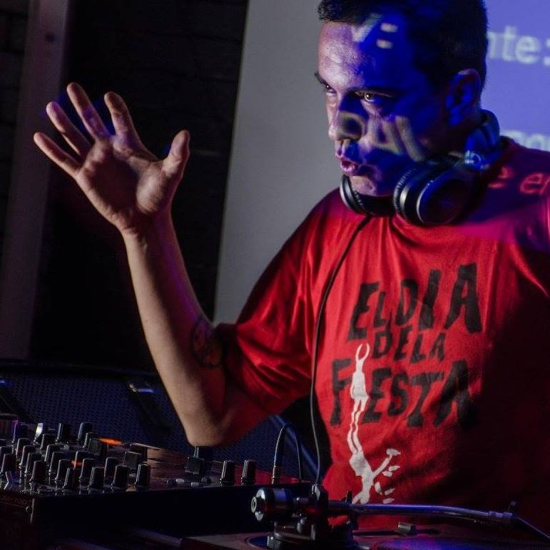

DJ ZYCO
The Acid Commander /// BCN
Having spent many years in the Punk Underground scene, he began his career as a DJ in 1995. He eventually found his home in Techno, choosing his music based on forceful sounds, later realising that he had entered the world of Acid Techno.
A spirit that he has been responsible for promoting through the foundation of the label ACID RESISTANCE.